Mise évidence des processus éco-évolutifs en milieu naturel : le cas des compromis entre traits d’histoire de vie
M. Buoro, J. Papaïx, S. Cubaynes
Case study 1: Coûts de la maturation et la migration pour la survie : une approche théorique
Packages & functions
require(rjags)## Loading required package: rjags## Loading required package: coda## Linked to JAGS 4.3.0## Loaded modules: basemod,bugslibrary(coda)Data simulation
Parameter values.
N=500 # number of individualsParameters values to simulate evolutionary trade-offs. Le paramètre alpha contrôle le coût de la maturation pour la survie, tandis que le paramètre beta celui du coût de la migration (croissance) pour la survie. Les valeurs correspondent aux valeurs attendus des paramètres à l’échelle du logarithme naturel. Ainsi si ces paramètres ne sont pas différents de 1, il n’y a pas de compromis ; si les coefficients sont inférieurs à 1, il y a un compromis négatif tandis que s’ils sont supérieurs à 1, il y a un compromis positif.
SCENARIO A: cost of maturation and migration for survival
ALPHA = 0.3; # cost of maturation for survival
BETA = 0.7; #cost of migration for survival
THETA = c(2, 4.4, -3.25) # THRESHOLDSSCENARIO B: no trade-offs
ALPHA = 1 # no cost of maturation for survival
BETA = 1 # no cost of migration for survival
THETA = c(2, 4.4, -2.5) # THRESHOLDSSCENARIO C: cost of maturation for survival and positive effect of migration on survival
ALPHA = 0.3 # cost of maturation for survival
BETA = 1.3; # advantage of migration for survival
THETA=c(2, 4.4, -2.75) # THRESHOLDSI=array(,dim=c(N,3)); # Binary variables of life history decisions, maturation, migration and survival respectively
X=array(,dim=c(N,2)); # Observable traits (weight and size)
Z=array(,dim=c(N,3)) # Proximate cues (latent variable)
SIGMA=NULLSIZE/WEIGHT RELATIONSHIP
mu_X=c(NA,80); # mu_X[2]: average size of individuals
a <- 0.00001;b <- 3 # coeffcients values of the weight-size relationship
SIGMA_X=c(0.2,12) # standard deviation for phenotypes size and weight
X[,2]<-rnorm(N,mu_X[2],SIGMA_X[2]) # Size
mu_X1 <- log(a) + b * log(X[,2]) # weight-size relationship
X[,1] <- rlnorm(N,mu_X1,SIGMA_X[1]) # WeightDécision de maturation
SIGMA=c(0.5,0.1) ## residual standard deviation
Z[,1] <- rnorm(N, log(X[,1]),SIGMA[1]) # Reserve status
I[,1] <- ifelse(Z[,1]>=THETA[1], 1, 0)Décision de migration
SIGMA=c(0.5,0.1) ## residual variance
Z[,2] <-rnorm(N, log(X[,2]),SIGMA[2]) # Structure status
I[,2] <- ifelse(Z[,2]>=THETA[2], 1, 0)Survie
Z[,3]<-(Z[,1] - Z[,2]) + log(ALPHA)*I[,1] + log(BETA)*I[,2]
I[,3] <- ifelse(Z[,3]>=THETA[3], 1, 0)Data
data<-list(
N=N
,Y=I # phenotypes (0/1)
,X=X # observable cues (e.g. weight, size)
)Model
write("
model {
for (i in 1:N) {
## Proximate cues ##
Z[i,1]~dnorm(log(X[i,1]), tau[1]) # Reserve
Z[i,2]~dnorm(log(X[i,2]), tau[2]) # Structure
## Maturing decision
Y[i,1]~dinterval(Z[i,1],THETA[1])
## Migration decision:
Y[i,2]~dinterval(Z[i,2],THETA[2])
## Survival:
Y[i,3]~dinterval(Z[i,1]-Z[i,2] + (log(ALPHA) * Y[i,1]) + (log(BETA) * Y[i,2]),THETA[3])
} # END OF THE LOOP i
### PRIORS ####
ALPHA~dgamma(0.5, 0.5)
BETA~dgamma(0.5, 0.5)
## Thresholds:
for (j in 1:3){THETA[j]~dnorm(0, 0.001)} # end loop j
## Variance
for (j in 1:2){
tau[j]<-pow(SIGMA[j],-2) # precision
SIGMA[j]~dunif(0,100) # sd
} # end loop j
} # END OF THE MODEL
", "LEAM.R")Analysis
parameters=c("ALPHA","BETA","THETA","SIGMA")
### /!\ Warning: To illustrate, here we use simulated values as initial values.
## but initial values can be generated randomly, they must however be consistent: Z.inits[i] > THETA.inits[i] if Y[i]=1
inits<-function(){
list(
'Z'=Z[,1:2]
,'THETA'=THETA,
'ALPHA'=ALPHA,
'BETA'=BETA,
'SIGMA'=SIGMA)
}
nChains = 2 # Number of chains to run.
adaptSteps = 1000 # Number of steps to "tune" the samplers.
burnInSteps = 5000 # Number of steps to "burn-in" the samplers.
numSavedSteps=25000 # Total number of steps in chains to save.
thinSteps=1 # Number of steps to "thin" (1=keep every step).
nPerChain = ceiling( ( numSavedSteps * thinSteps ) / nChains ) # Steps per chain.Compile & adapt
### Start of the run ###
start.time = Sys.time(); cat("Start of the run\n");## Start of the run## Compile & adapt
# Create, initialize, and adapt the model:
jagsfit=jags.model('LEAM.R',data,inits,n.chains=nChains,n.adapt = adaptSteps)## Compiling model graph
## Resolving undeclared variables
## Allocating nodes
## Graph information:
## Observed stochastic nodes: 1500
## Unobserved stochastic nodes: 1007
## Total graph size: 5522
##
## Initializing model# Burn-in:
cat( "Burning in the MCMC chain…\n" )## Burning in the MCMC chain…#jagsfit$recompile()
update(jagsfit, n.iter=burnInSteps,progress.bar="text")
# The saved MCMC chain:
cat( "Sampling final MCMC chain…\n" )## Sampling final MCMC chain…fit.mcmc<-coda.samples(jagsfit,variable.names=parameters,
n.iter=nPerChain, thin=thinSteps)
# duration of the run
end.time = Sys.time()
elapsed.time = difftime(end.time, start.time, units='mins')
cat("Sample analyzed after ", elapsed.time, ' minutes\n')## Sample analyzed after 0.9532645 minutesExamine the results
parameterstoplot=c("ALPHA","BETA","THETA[1]","THETA[2]","THETA[3]","SIGMA[1]","SIGMA[2]")
gelman.diag(fit.mcmc[,parameterstoplot])## Potential scale reduction factors:
##
## Point est. Upper C.I.
## ALPHA 1.04 1.18
## BETA 1.13 1.47
## THETA[1] 1.05 1.22
## THETA[2] 1.00 1.00
## THETA[3] 1.09 1.32
## SIGMA[1] 1.03 1.14
## SIGMA[2] 1.00 1.00
##
## Multivariate psrf
##
## 1.19summary(fit.mcmc)##
## Iterations = 6001:18500
## Thinning interval = 1
## Number of chains = 2
## Sample size per chain = 12500
##
## 1. Empirical mean and standard deviation for each variable,
## plus standard error of the mean:
##
## Mean SD Naive SE Time-series SE
## ALPHA 0.3043 0.028276 1.788e-04 0.0033605
## BETA 1.1670 0.059774 3.780e-04 0.0083758
## SIGMA[1] 0.4948 0.039986 2.529e-04 0.0038261
## SIGMA[2] 0.1027 0.008296 5.247e-05 0.0002707
## THETA[1] 1.9853 0.040661 2.572e-04 0.0067840
## THETA[2] 4.3953 0.007546 4.773e-05 0.0009801
## THETA[3] -2.8142 0.035230 2.228e-04 0.0068832
##
## 2. Quantiles for each variable:
##
## 2.5% 25% 50% 75% 97.5%
## ALPHA 0.24819 0.2844 0.3047 0.3242 0.3590
## BETA 1.06230 1.1235 1.1627 1.2052 1.2934
## SIGMA[1] 0.42391 0.4658 0.4920 0.5214 0.5782
## SIGMA[2] 0.08759 0.0970 0.1023 0.1080 0.1201
## THETA[1] 1.91231 1.9539 1.9859 2.0124 2.0653
## THETA[2] 4.37875 4.3908 4.3956 4.4003 4.4092
## THETA[3] -2.89358 -2.8369 -2.8134 -2.7891 -2.7485traceplot(fit.mcmc)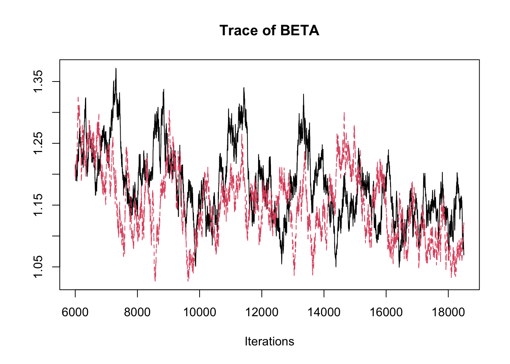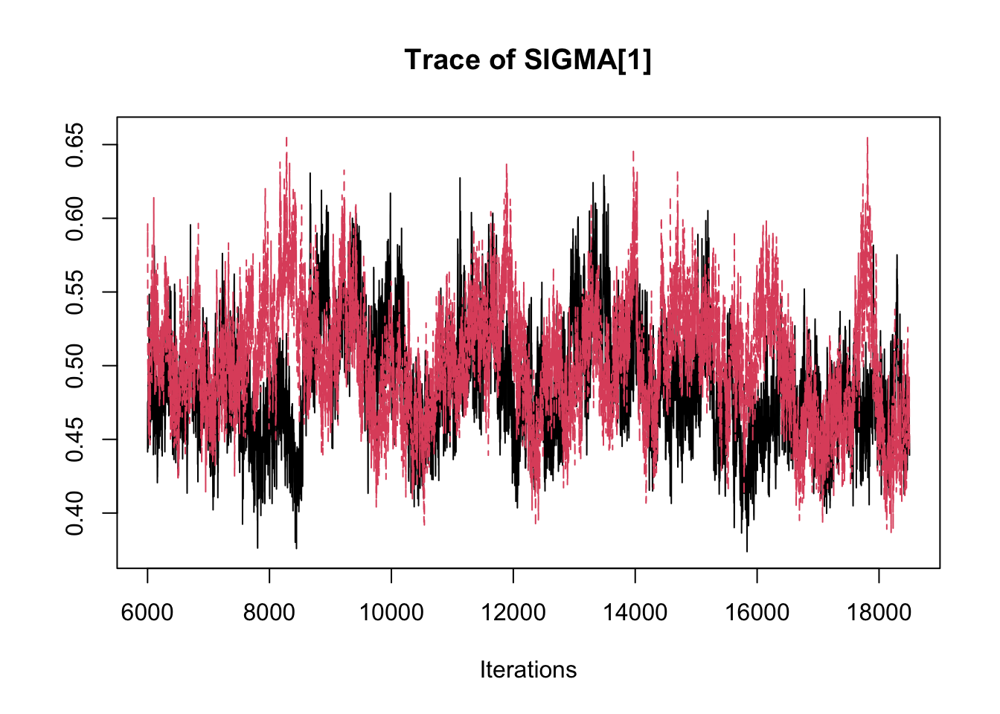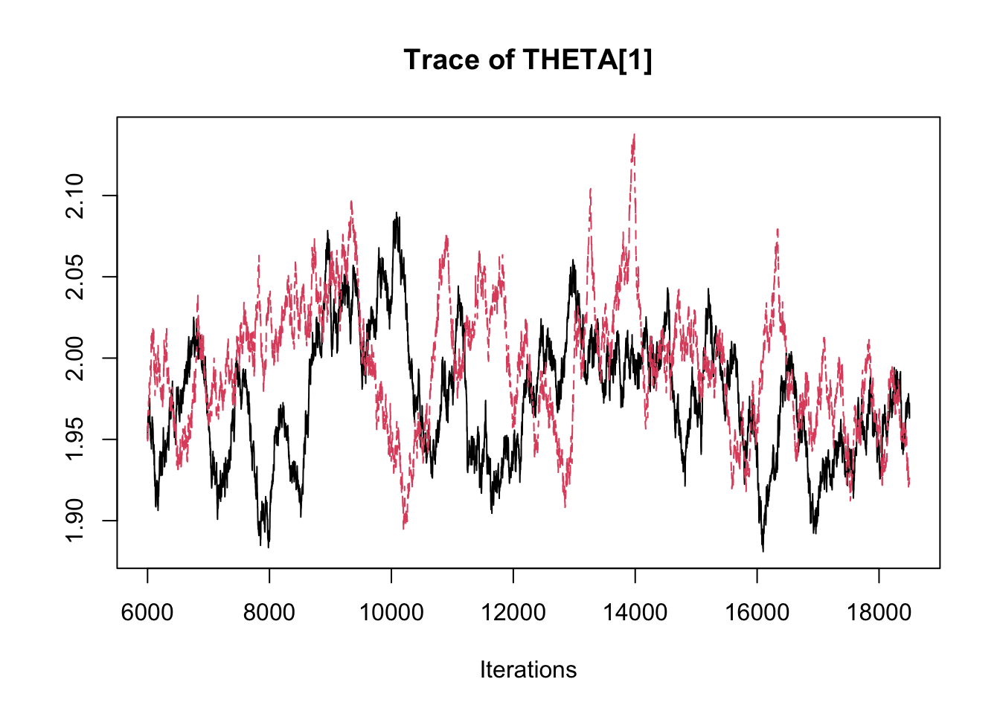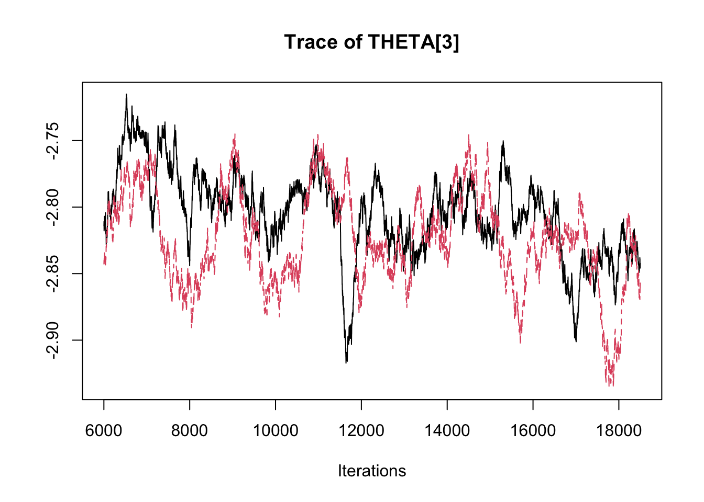
densplot(fit.mcmc)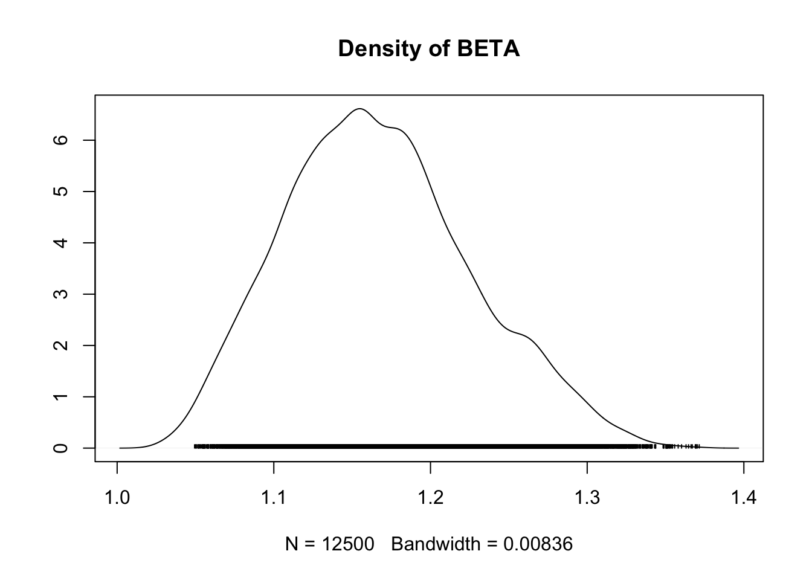
Case study 2: Coûts de la maturation et la migration pour la survie : une approche théorique
library(rjags) #here Jags 4.10
library(coda)Load dataset. Data from F. Courbet and F. Lefevre - INRAE URFM. Simulation castanea from H. Davi - INRAE URFM
data <- read.csv("dat/Dataset_cedrus_atlantica.csv",header=T,sep=";")Create JAGS model file
cat("
model{
##prior for the mod1 mod 2 selection
Y ~ dbern(pY)
pY ~dunif(0,1)
##a priori distribution
##some are for each density stands with [1] and [2]
gamma[1] ~ dnorm(0,0.001)
gamma[2] ~ dnorm(0,0.001)
tau_BAI <- 1/(sd_BAI*sd_BAI)
sd_BAI ~ dunif(0,10)
PG_bar ~ dnorm(0,0.0001)
tauPG <- 1/(sigma*sigma)
sigma ~ dunif(0,10)
tau_proba <- 1/(sigma_proba*sigma_proba)
sigma_proba ~ dunif(0,50)
beta1[1] ~ dnorm(0,0.001)
beta2[1] ~ dnorm(0,0.001)
beta1[2] ~ dnorm(0,0.001)
beta2[2] ~ dnorm(0,0.001)
beta0 <- -10 #old version : beta0 ~ dnorm(0,0.001)
pr_X ~ dunif(0,1)
for (i in 1:3){
mu.eps[i] <- 0
}
Id[1,1] <- 1
Id[2,2] <- 1
Id[3,3] <- 1
Id[1,2] <- 0
Id[1,3] <- 0
Id[2,1] <- 0
Id[2,3] <- 0
Id[3,1] <- 0
Id[3,2] <- 0
inv.SIGMA ~ dwish(Id,4)
for (i in 1:(Nind-1)){
eps[1:3,i] ~ dmnorm(mu.eps, inv.SIGMA)
}
eps[1,Nind] <- -sum(eps[1,1:(Nind-1)])
eps[2,Nind] <- -sum(eps[2,1:(Nind-1)])
eps[3,Nind] <- -sum(eps[3,1:(Nind-1)])
# estimating covariance (rho) among group predictors
SIGMA <- inverse(inv.SIGMA)
for(k in 1:3){
for (k.prime in 1:3){
rho[k,k.prime] <- SIGMA[k,k.prime]/sqrt(SIGMA[k,k]*SIGMA[k.prime,k.prime])
}
}
##likelihood
for (i in 1:Nind){
X[i,1] ~ dbern(pr_X)
IB[i,1] ~ dpois(X[i,1]*meanIB[i,1])
log(meanIB[i,1]) <- (beta1[dens[i]] + Y*eps[2,i])*NPP[i,1]+(1-Y)*eps[2,i]
PG_bartot[i,1] ~ dnorm(PG_bar,tauPG)
logit(PG[i,1]) <- PG_bartot[i,1]
for (t in 2:Ntemps){
mu_BAI[i,t] <- (gamma[dens[i]] + Y*eps[1,i])*NPP[i,t]+(1-Y)*eps[1,i]
BAI[i,t] ~ dnorm(mu_BAI[i,t],tau_BAI)
##male cones -- male flower
PG_bartot[i,t] ~ dnorm(PG_bar,tauPG)
logit(PG[i,t]) <- PG_bartot[i,t]
X[i,t] ~ dbern(pr_X)
IB[i,t] ~ dpois(X[i,t]*meanIB[i,t])
log(meanIB[i,t]) <- (beta1[dens[i]] + Y*eps[2,i])*NPP[i,t] + (1-Y)*eps[2,i]
pr_IMC[i,t] <- PG[i,t]*IB[i,t]
proba[i,t,1] <- pnorm(10,pr_IMC[i,t],tau_proba)
proba[i,t,2] <- pnorm(20,pr_IMC[i,t],tau_proba)-pnorm(10,pr_IMC[i,t],tau_proba)
proba[i,t,3] <- pnorm(30,pr_IMC[i,t],tau_proba)-pnorm(20,pr_IMC[i,t],tau_proba)
proba[i,t,4] <- pnorm(40,pr_IMC[i,t],tau_proba)-pnorm(30,pr_IMC[i,t],tau_proba)
proba[i,t,5] <- 1-pnorm(40,pr_IMC[i,t],tau_proba)
M[i,t,1:5] ~ dmulti(proba[i,t,1:5],1)
###female cones -- female flowers (based on previous year and current year)
logit(pi[i,t]) <- beta0 + (beta2[dens[i]] + Y*eps[3,i])*NPP[i,t] + (1-Y)*eps[3,i]
FC[i,t] ~ dpois(pi[i,t]*(1-PG[i,t-1])*meanIB[i,t-1]*X[i,t-1])
##simulating data
BAI.rep[i,t] ~ dnorm(mu_BAI[i,t],tau_BAI)
eval.BAI[i,t] <- mu_BAI[i,t]
E.BAI[i,t] <- pow(BAI[i,t]-eval.BAI[i,t],2)/(eval.BAI[i,t]+0.5)
Erep.BAI[i,t] <- pow(BAI.rep[i,t]-eval.BAI[i,t],2)/(eval.BAI[i,t]+0.5)
M.rep[i,t,1:5] ~ dmulti(proba[i,t,1:5],1)
eval.M[i,t,1:5] <- proba[i,t,1:5]
E.M1[i,t] <- pow(-M[i,t,1]+eval.M[i,t,1],2) #/(eval.M[i,t,1]+0.5)
Erep.M1[i,t] <- pow(-M.rep[i,t,1]+eval.M[i,t,1],2) #/(eval.M[i,t,1]+0.5)
E.M2[i,t] <- pow(-M[i,t,2]+eval.M[i,t,2],2) #/(eval.M[i,t,2]+0.5)
Erep.M2[i,t] <- pow(-M.rep[i,t,2]+eval.M[i,t,2],2) #/(eval.M[i,t,2]+0.5)
E.M3[i,t] <- pow(-M[i,t,3]+eval.M[i,t,3],2) #/(eval.M[i,t,3]+0.5)
Erep.M3[i,t] <- pow(-M.rep[i,t,3]+eval.M[i,t,3],2) #/(eval.M[i,t,3]+0.5)
E.M4[i,t] <- pow(-M[i,t,4]+eval.M[i,t,4],2) #/(eval.M[i,t,4]+0.5)
Erep.M4[i,t] <- pow(-M.rep[i,t,4]+eval.M[i,t,4],2) #/(eval.M[i,t,4]+0.5)
E.M5[i,t] <- pow(-M[i,t,5]+eval.M[i,t,5],2) #/(eval.M[i,t,5]+0.5)
Erep.M5[i,t] <- pow(-M.rep[i,t,5]+eval.M[i,t,5],2) #/(eval.M[i,t,5]+0.5)
FC.rep[i,t] ~ dpois(pi[i,t]*(1-PG[i,t-1])*meanIB[i,t-1]*X[i,t-1])
eval.FC[i,t] <- pi[i,t]*(1-PG[i,t-1])*meanIB[i,t-1]*X[i,t-1]
E.FC[i,t] <- pow(FC[i,t]-eval.FC[i,t],2)/(eval.FC[i,t]+0.5)
Erep.FC[i,t] <- pow(FC.rep[i,t]-eval.FC[i,t],2)/(eval.FC[i,t]+0.5)
}
}
##simulating data: needed for model validation (see model evaluation in SI)
fit.BAI <- sum(E.BAI[,2:8])
fitrep.BAI <- sum(Erep.BAI[,2:8])
fit.M1 <- sum(E.M1[,4:7])/(Nind*4)
fitrep.M1 <- sum(Erep.M1[,4:7])/(Nind*4)
fit.M2 <- sum(E.M2[,4:7])/(Nind*4)
fitrep.M2 <- sum(Erep.M2[,4:7])/(Nind*4)
fit.M3 <- sum(E.M3[,4:7])/(Nind*4)
fitrep.M3 <- sum(Erep.M3[,4:7])/(Nind*4)
fit.M4 <- sum(E.M4[,4:7])/(Nind*4)
fitrep.M4 <- sum(Erep.M4[,4:7])/(Nind*4)
fit.M5 <- sum(E.M5[,4:7])/(Nind*4)
fitrep.M5 <- sum(Erep.M5[,4:7])/(Nind*4)
fit.FC <- sum(E.FC[,4:7])
fitrep.FC <- sum(Erep.FC[,4:7])
}
", file="Bayesian_model_studycase.jags")define and convert observations individual, year and obs
Nind <- length(unique(data$tree_ID))
Ntemps <- length(unique(data$year))
castNPP<-matrix(data$resources_NPP_castanea,ncol=Ntemps,byrow=T)
castNPP <- castNPP/max(castNPP) #range(1/(1+exp(-(0+0*as.vector(castNPP)))))
BAI <- matrix(data$BAI_growth,ncol=Ntemps,byrow=T)
M <- matrix(data$pollen_index,ncol=Ntemps,byrow=T)
FC <- matrix(data$cone_count,ncol=Ntemps,byrow=T)For density
dens <-matrix(data$density_plot,ncol=Ntemps,byrow=T)
dens <- as.numeric(as.factor(dens[,1]))Convert pollen dataset
Mmatrice <- array(NA,dim=c(nrow(M),ncol(M),5))
Mmatrice[,,1] <- (M==0)+0
Mmatrice[,,2] <- (M==1)+0
Mmatrice[,,3] <- (M==2)+0
Mmatrice[,,4] <- (M==3)+0
Mmatrice[,,5] <- (M==4)+0
X <- ((M+cbind(FC[,-1],rep(NA,Nind)))>0)+0
Xinit <- matrix(NA,ncol=ncol(X),nrow=nrow(X))
Xinit[,3] <- (FC[,4]>0)+0 #to avoid problem non numerical initial valuesModel implementation (can take an hour (with Intel Xeon CPU E3-1240 3.50GHz, memory system 16G))
n.chains<-3
n.iter<-100000
n.burn<-100000
n.thin<-100
# quicker run, for illustration purpose
n.chains<-3
n.iter<-1000
n.burn<-100
n.thin<-2
#check time begining
time0=Sys.time()
########################
#run model and select parameters of interest
modele <- jags.model(file="Bayesian_model_studycase.jags",
data=list(Nind=Nind,Ntemps=Ntemps,BAI=BAI,M=Mmatrice,FC=FC,NPP=castNPP,X=X,dens=dens),
inits=list(PG_bartot=matrix(0,ncol=Ntemps,nrow=Nind),X=Xinit),
n.chains=n.chains, quiet=FALSE)## Compiling model graph
## Resolving undeclared variables
## Allocating nodes
## Graph information:
## Observed stochastic nodes: 1278
## Unobserved stochastic nodes: 3492
## Total graph size: 45561
##
## Initializing model## Warning in jags.model(file = "Bayesian_model_studycase.jags", data = list(Nind =
## Nind, : Adaptation incompleteupdate(modele, n.iter = n.burn)
RES <- coda.samples(model = modele,
variable.names = c("pY","Y", "gamma","sd_BAI","pr_X","PG_bar","PG","sigma","beta0","beta1","beta2","rho","SIGMA","eps","fit.BAI","fitrep.BAI","fit.M1","fitrep.M1","fit.M2","fitrep.M2","fit.M3","fitrep.M3","fit.M4","fitrep.M4","fit.M5","fitrep.M5","fit.FC","fitrep.FC","sigma_proba","FC.rep","BAI.rep"),
n.iter = n.iter,
thin = n.thin)## NOTE: Stopping adaptationprint(Sys.time()-time0)## Time difference of 51.91246 secsShort check model
#select the 3 chains
C1 <- as.matrix(RES[[1]])
C2 <- as.matrix(RES[[2]])
C3 <- as.matrix(RES[[3]])
plot(C1[,"rho[2,3]"],type="l")
lines(C2[,"rho[2,3]"],col=2)
lines(C3[,"rho[2,3]"],col=3)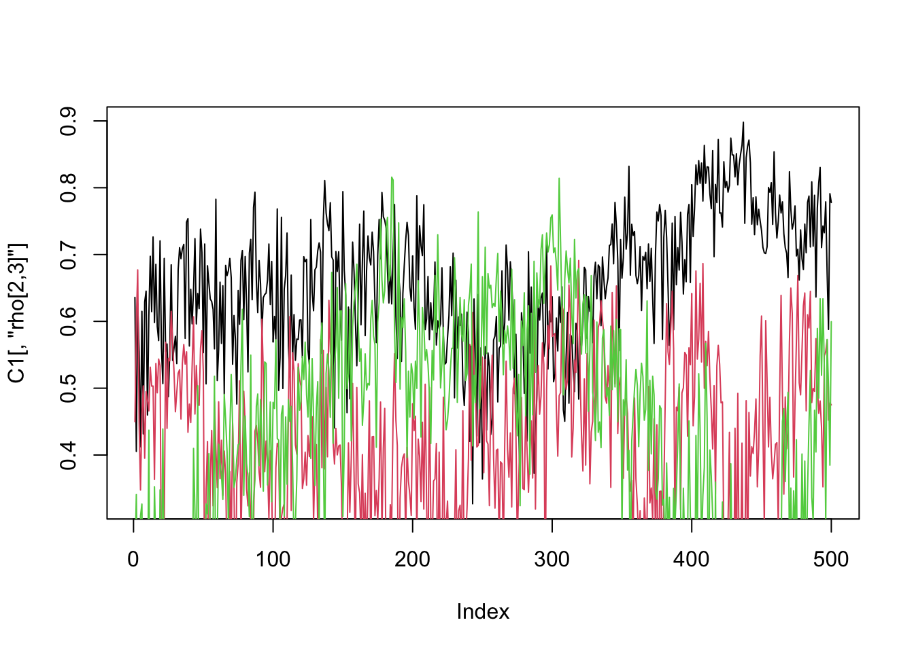
plot(RES[,"rho[1,2]"])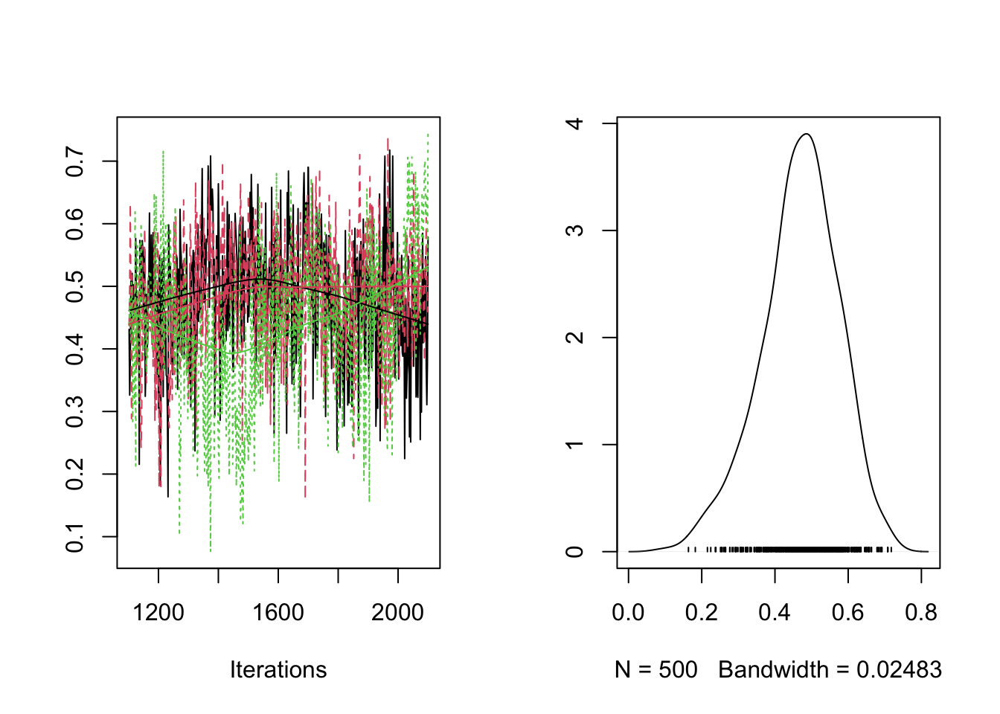
plot(RES[,"rho[1,3]"])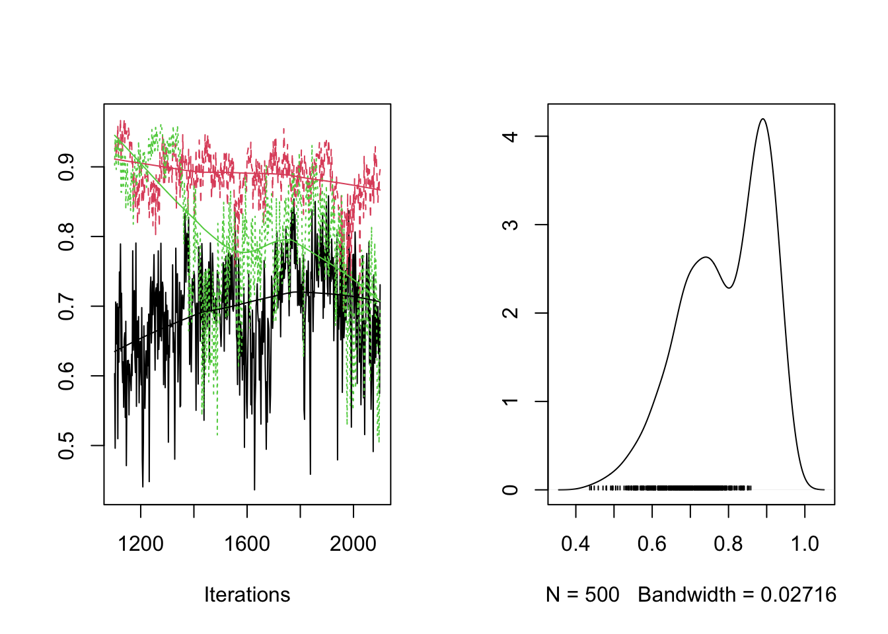
plot(RES[,"rho[2,3]"])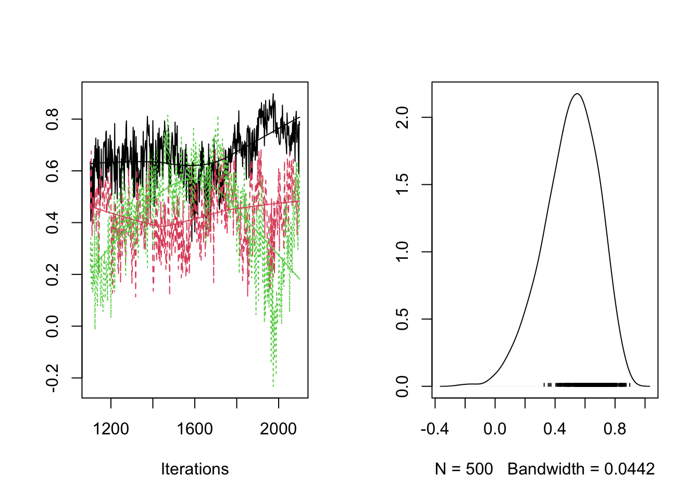
plot(RES[,"pr_X"])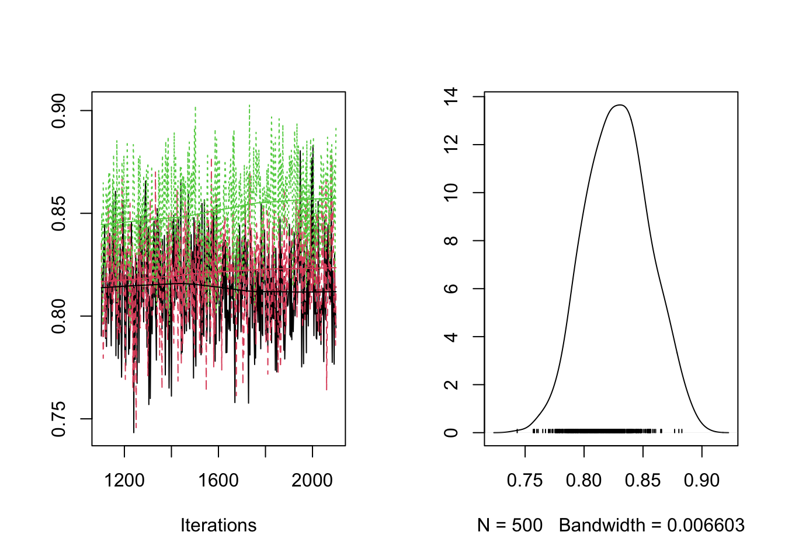
plot(RES[,"sigma_proba"])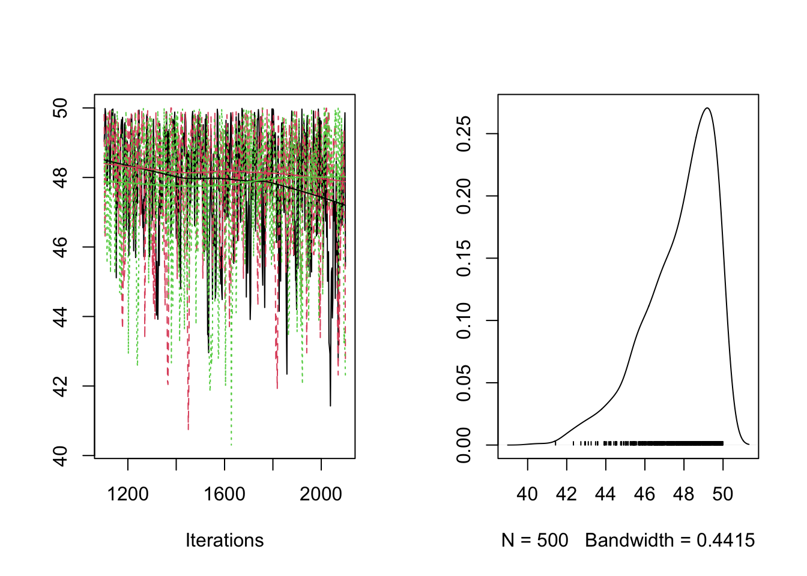
plot(RES[,"sigma"])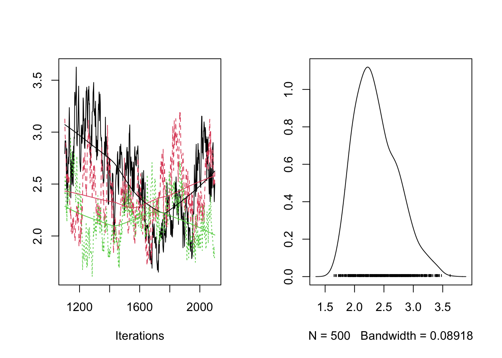
plot(RES[,"PG_bar"])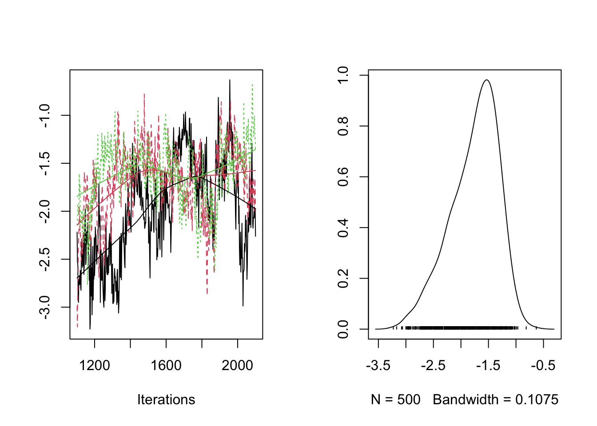
plot(RES[,"sd_BAI"])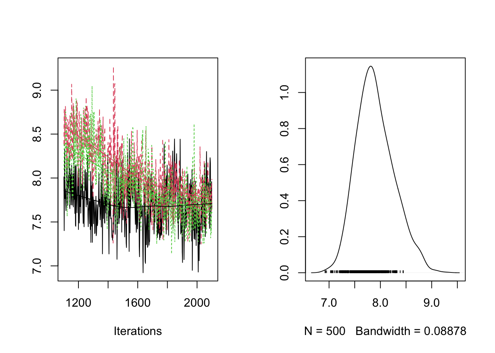
plot(RES[,"gamma[1]"]) #density 1 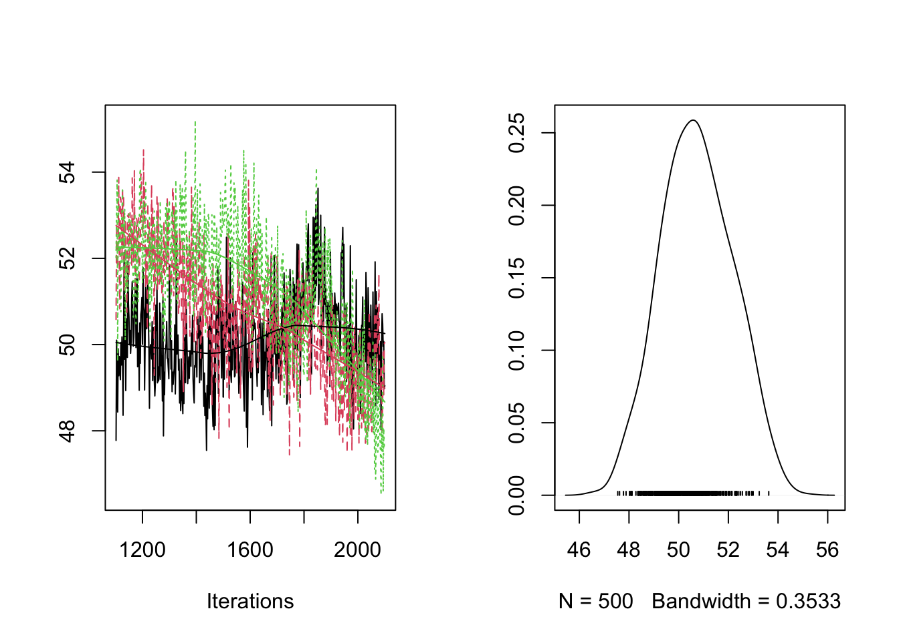
plot(RES[,"gamma[2]"]) #plot density 2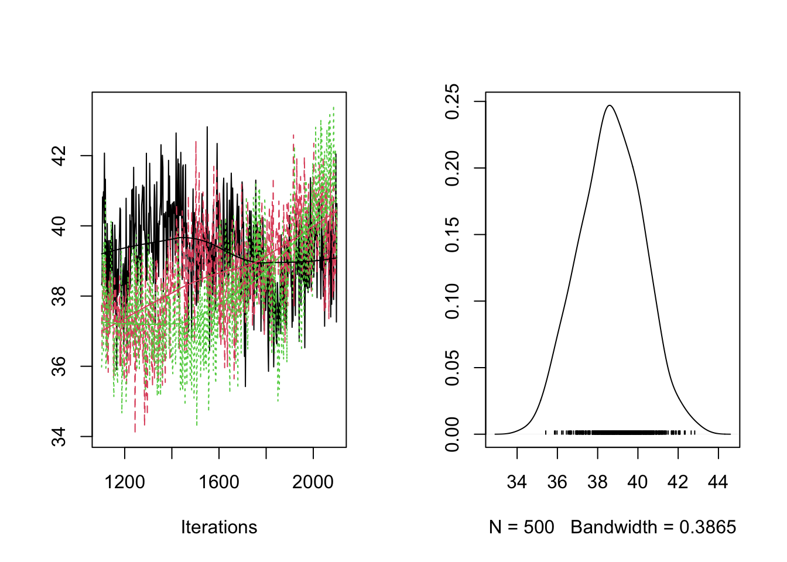